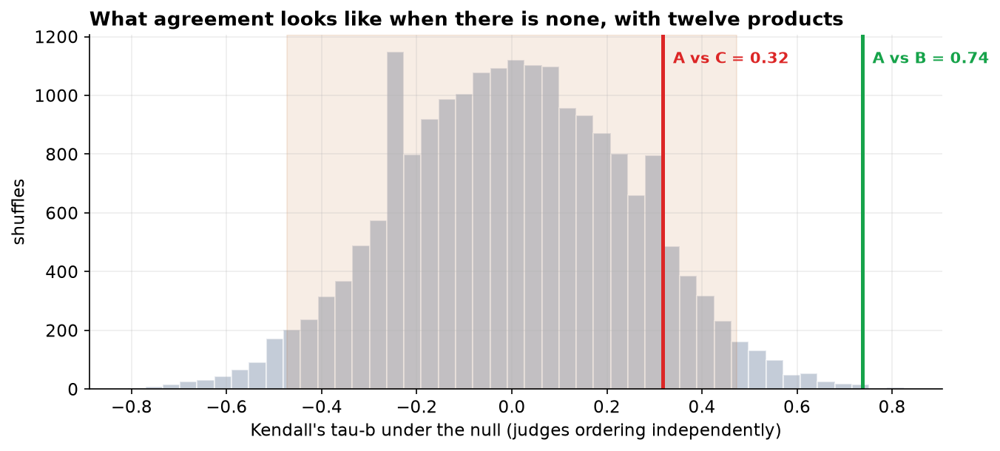

Inter-Rater Agreement on an Ordinal Product Ranking: Kendall's Tau-b and Coefficient of Concordance
A small-sample rank-agreement analysis with a permutation reference distribution.
Keywords: Kendall's tau-b; coefficient of concordance; inter-rater agreement; ordinal data; tied ranks; permutation test; small samples.
1. Introduction
Rank-agreement statistics answer a narrower question than they are often asked to answer. They quantify whether two raters impose the same ordering on a set of items. They are silent on whether either ordering is correct, and silent on the magnitude of the differences the raters perceived. In panel work this distinction is consequential: a rater applying a uniform offset to every score is in perfect agreement by any rank criterion and in poor agreement by any measure computed on the raw scores.
Kendall's τ is preferred to Spearman's ρ here on three grounds. Its definition is a direct statement about pairs of items, so it admits an interpretation Spearman's coefficient does not. The τb variant incorporates an explicit correction for ties, which are structurally guaranteed when ten score values are distributed over twelve items. And its sampling distribution approaches normality more rapidly, which matters at n = 12.
The hypotheses are H₀: τ = 0, the raters order the items independently, against H₁: τ ≠ 0, evaluated two-sided at α = 0.05.
2. Data
Three trained raters scored the same products blind on an integer scale of 1 to 10. The unit of analysis is the item; the panel size is limited by sensory fatigue rather than by data availability, which is the ordinary constraint in this design and the reason small-sample behavior is treated explicitly below.
| Step | Rule | Result |
|---|---|---|
| Raw export | — | 16 rows |
| De-duplication | drop duplicate submissions | 15 rows |
| Complete cases | retain items scored by all three raters | 13 rows |
| Range validation | retain scores in 1–10 | 12 rows |
| Rater | Mean | SD | Distinct values used | Median |
|---|---|---|---|---|
| Judge A | 4.67 | 1.67 | 5 | 4.5 |
| Judge B | 4.50 | 1.83 | 7 | 5.0 |
| Judge C | 5.17 | 2.92 | 10 | 5.0 |
3. Methods
For each pair of items, the sign of the difference was compared across raters. Pairs receiving the same sign are concordant, opposite signs discordant, and pairs in which either rater assigned equal scores are tied and carry no information about ordering. Kendall's τa divides the excess of concordant over discordant pairs by all pairs; τb excludes tied pairs from the denominator separately for each rater, and is the appropriate statistic when ties are structural rather than incidental.
Given n = 12, the normal approximation underlying the analytic p-value was not relied upon alone. A permutation reference distribution was constructed by randomly relabeling one rater's scores 20,000 times and recomputing τb, which preserves the tie structure of both margins while destroying any association between them. Panel-level agreement used Kendall's W with the standard correction for tied ranks, tested against a χ² distribution on n − 1 degrees of freedom. Analyses used SciPy in Python 3.
4. Results
| Pair classification | Count | Contribution |
|---|---|---|
| Concordant | 46 | +1 |
| Discordant | 4 | −1 |
| Tied by rater A only | 8 | excluded from A's denominator |
| Tied by rater B only | 6 | excluded from B's denominator |
| Tied by both | 2 | excluded from both |
| Total pairs | 66 | — |
Of 66 pairs, 16 involve at least one tie, or 24% of the total. Retaining them in the denominator yields τa = 0.636, which understates agreement by charging the coefficient for pairs that were never disagreements. The tie-corrected τb = 0.737 is the value reported.
| Rater pair | τb | p (asymptotic) | Interpretation |
|---|---|---|---|
| A and B | 0.737 | 0.0024 | substantial, reject H₀ |
| A and C | 0.317 | 0.178 | not distinguishable from zero |
| B and C | 0.181 | 0.437 | not distinguishable from zero |
Spearman's ρ for raters A and B is 0.817, materially above τb = 0.737 on identical data. The two coefficients are not estimates of a common parameter and the discrepancy carries no diagnostic content; it is noted only because reporting one without naming it invites the reader to compare it against the other.

| Quantity | Value |
|---|---|
| SD of the null distribution | 0.244 |
| Central 95% of null values | [-0.474, 0.474] |
| P(|τ| ≥ 0.317) under H₀ | 19.1% |
| P(|τ| ≥ 0.737) under H₀ | 0.1% |
The permutation results are the substantive finding for rater C. A coefficient of 0.317 would be described as moderate in a large sample. At n = 12 the null distribution has standard deviation 0.244 and reaches 0.47 at its 97.5th percentile, so that value is entirely ordinary under independent ordering. The permutation and asymptotic p-values agree closely here, which is itself worth recording: the approximation held, but that could not be assumed in advance at this sample size.
| Statistic | Value |
|---|---|
| Kendall's W | 0.662 |
| χ² | 21.85 |
| df | 11 |
| p-value | 0.0255 |
W = 0.662 rejects the hypothesis that all three raters order independently. It should not be reported alone. A single panel-level coefficient averages over the structure the pairwise analysis exposed, and a panel comprising one strongly agreeing pair and one dissenting rater is not well described by a single moderate number.
5. Interval estimates at n = 12
| Quantity | Estimate | 95% CI | Width |
|---|---|---|---|
| Raters A and B, τb | +0.737 | +0.427 to +0.955 | 0.53 |
| Raters A and C, τb | +0.317 | −0.280 to +0.820 | 1.10 |
| Kendall's W, panel | 0.662 | 0.310 to 0.903 | 0.59 |
The permutation test established that the agreement between raters A and B is not attributable to chance. It did not bound the magnitude of that agreement, and at twelve items the bound is wide: the coefficient lies between approximately 0.43 and 0.96.
This is the small-sample limitation of the design expressed as estimation rather than as a decision. The data support the conclusion that two raters agree and do not support any statement about the degree of agreement. The interval for the third rater spans zero and half the positive range, and the panel-level concordance coefficient is similarly imprecise.
The practical implication concerns reporting convention. Agreement coefficients computed on small item sets are routinely quoted to three decimal places and compared across panels. Neither practice is defensible at this precision, and the interval should accompany the coefficient wherever it is reported.
6. Discussion
Two of three raters share an ordering of the items; the third does not agree with either at a level this design can detect. The correct characterization of the third result is that the panel lacks the resolution to distinguish moderate agreement from none, not that rater C is unreliable. Distinguishing τ = 0.32 from zero at conventional power would require several times as many items.
Three design features constrain interpretation. First, if all raters assessed items in a common sequence, order and fatigue effects are confounded with agreement: raters who drift in the same direction over a session will appear to concur. Randomizing sequence independently per rater removes the confound, and the present protocol did not record whether this was done. Second, agreement is not accuracy. A rater uniquely sensitive to a genuine attribute would be identified as the outlier by this analysis, and no rank statistic can distinguish that case from idiosyncrasy. Third, the raters used a narrow band of the available scale, which concentrates ties and reduces the number of informative pairs; a scale with finer discrimination, or explicit forced ranking, would raise the effective information per item.
A note on reporting practice. Rank-agreement coefficients computed on small item sets are frequently quoted to three decimal places and occasionally used to evaluate individuals. Neither is defensible. The interval implied by the permutation distribution here is wide enough that the second decimal place is not meaningfully determined.
7. Conclusion
Raters A and B agree substantially on the ordering of twelve products (τb = 0.737, p = 0.0024; 46 concordant against 4 discordant pairs). Rater C is not distinguishable from random ordering (τb = 0.317 against A, p = 0.178), a limitation of resolution at n = 12 rather than a demonstrated failure of the rater. Panel concordance is moderate (W = 0.662, p = 0.0255) and should be reported alongside the pairwise coefficients rather than in place of them.
References
- Kendall, M. G. (1938). A new measure of rank correlation. Biometrika, 30(1–2), 81–93.
- Kendall, M. G., & Babington Smith, B. (1939). The problem of m rankings. Annals of Mathematical Statistics, 10(3), 275–287.
- Kendall, M. G. (1945). The treatment of ties in ranking problems. Biometrika, 33(3), 239–251.
- Noether, G. E. (1981). Why Kendall tau? Teaching Statistics, 3(2), 41–43.
- Good, P. (2005). Permutation, Parametric and Bootstrap Tests of Hypotheses (3rd ed.). Springer.
- Gwet, K. L. (2014). Handbook of Inter-Rater Reliability (4th ed.). Advanced Analytics.
- Hollander, M., Wolfe, D. A., & Chicken, E. (2014). Nonparametric Statistical Methods (3rd ed.). Wiley.
Reproducibility
The dataset (capstone-judges-product-rankings.xlsx) and an executable notebook reproducing every statistic, table, and figure, including the pair decomposition and the permutation distribution, accompany the chapter. Analyses use NumPy, pandas, SciPy, and Matplotlib.